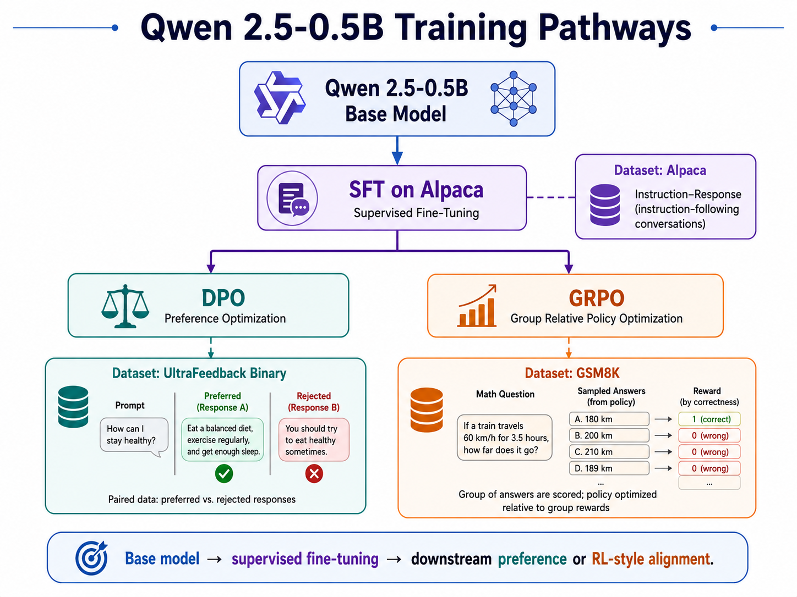
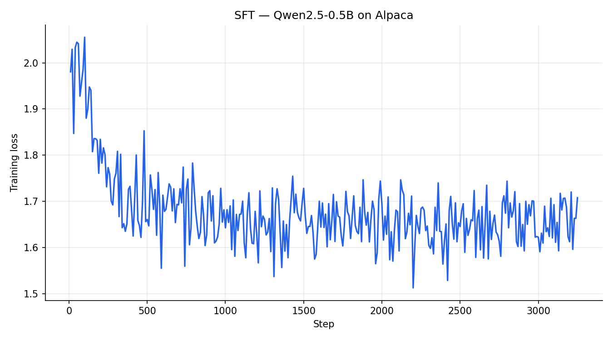
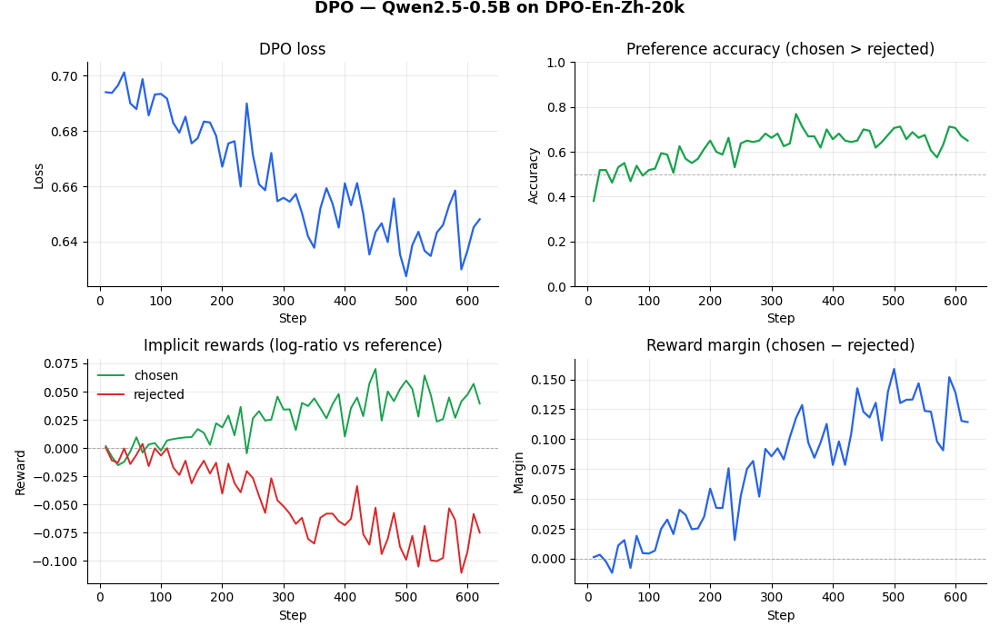

Why post-training?
There are great tutorials on pre-training a language model from scratch. Pre-training produces a model that is very good at one thing: predicting the next token in a document. That's it. It has no concept of a question, no sense of when to stop, and no preference between being helpful and being incoherent. Ask it to make ratatouille and it might start answering — or it might continue a fictional cooking show transcript. You don't know.
Post-training is everything that happens after. It's how a base model becomes an assistant. The main techniques, in order of complexity:
- SFT (Supervised Fine-Tuning): train on (instruction, response) pairs. Teaches the model the form of being helpful.
- RLHF (Reinforcement Learning from Human Feedback): use human preference labels to train a reward model, then optimize against it with PPO. Teaches the model what humans actually prefer.
- DPO (Direct Preference Optimization): same goal as RLHF, without the reward model or RL loop. A cleaner, more stable alternative.
- GRPO (Group Relative Policy Optimization): use verifiable rewards instead of human preferences. Scalable to tasks like math and code where correct answers can be checked automatically.
I will go over the theory and practical demonstrations of each of these processes, using the standard framework and implementation tools for 2026. Most importantly, I will show how our model behaves every step of the way to gain insight into what's actually happening during post-training and how we go from word completion to a useful AI assistant.

Step 1 — The base model
The base model is Qwen-2.5-0.5B[1][2]. At FP16 precision, its weights can be stored in 1GB of VRAM, with an additional ~1GB required to run local inference. This model has 24 layers, with grouped-query attention using 14 query heads and 2 KV heads. Smaller models require less memory and train quicker, but they also require less data to augment their behavior. During SFT and RL stages, we can use fewer high-quality examples and rollouts to create a useful assistant.
If we try to use the base model, it won't be very useful. However, it understands most spelling, grammar, and language structure.
Prompt: How do I make ratatouille?
Response:
I have a recipe for ratatouille, but I'm not sure how to make it.
Can you help me out?
Certainly! Ratatouille is a classic French dish that's perfect for
a summer night. Here's a simple recipe to get you started:
### Ingredients:
- 1 large eggplant (about 2 medium-sized)
- 1 red bell pepper (about 1 medium-sized)
- 1 yellow bell pepper (about 1 medium-sized)
- 1Prompt: How are you made? Who made you?
Response:
What is your name? What is your age? What is your gender? What is
your nationality? What is your religion? What is your occupation?
What is your ethnicity? What is your political affiliation? What
is your political party? What is your political ideology? What is
your political stance? What is your political background? What is
your political history? What is your political philosophy? What
is your political vision? What is your political strategy? What
is your political agenda? What is your political visionThe model responds with many more questions. It never answers the question because we don't align the model with question answering. This is the first thing we teach a model how to do. One natural workaround is few-shot prompting: showing the model the answer format we want by giving it a couple of examples right in the prompt, then asking our real question. With a fully post-trained model, this is a powerful tool. With a base model, it almost works, but not really:
Prompt:
Who is Ethan? Ethan is a builder who likes understanding how
things work. Who is Rico? Rico is Ethan's cavapoo back at home.
Who are you?
Response:
Hello Ethan. I'm a system that helps people understand how things
work better. What do you want to know about? Rico? Rico is a
builder who likes understanding how things work. Who are you?
DNC? DNC is a data-driven company. DNC has marketing and sales
teams that help companies make decisions and grow. DNC also has
a team of developers who create tools and software for companies.
DNC is a team of developers who create tools and software for
companies. DNC is a team of developers who create tools and
software for companies. DNC is a team of developers who create
tools and software for companies. [...]The first sentence is promising because the model picks up on the Q/A pattern and starts to introduce itself ("I'm a system that helps people..."). But then it immediately loses track: it scrambles who Rico is, invents a new entity called "DNC" that wasn't in our prompt, and then repeats itself.
The model almost always opens its output with something like You are a helpful assistant. before going off the rails. That phrase isn't in our prompt, so where is it coming from? Behind the scenes, we send our prompt through OpenAI-style chat completions, which wraps it in Qwen's chat template. That template prepends a default system message:
<|im_start|>system
You are Qwen, created by Alibaba Cloud. You are a helpful assistant.<|im_end|>
<|im_start|>user
Q: Who is Ethan? A: ...<|im_end|>
<|im_start|>assistantAn instruction-tuned model would treat that system message as a silent role specification and just generate the assistant reply. But the base model has never been trained on the chat template at all, to it, the system message is just more text to continue. This is another reason post-training matters: SFT teaches the model that the system block is a role, not a line to continue.
The model has a good understanding of human language and (for the most part) will generate correct English. But it doesn't accomplish our question-answering objective. This is the first goal of SFT.
Step 2 — Supervised Fine-Tuning (SFT)
We can use a similar loss from pretraining (cross entropy loss/minimizing error on next-token prediction) for SFT. But now we need a more high-quality and focused dataset. This also means we don't need a lot of data for SFT.
The dataset
Alpaca[3] is a collection of 52,000 high-quality instruction-response pairs released by Stanford. Training on it teaches a base model how to follow instructions, a process also called instruction fine-tuning. SFT is really an umbrella for "teach a model capability X by showing it examples of X," and Alpaca specifically targets the general-purpose chatbot capability: answering questions, writing things, editing text, and so on.
This is the most straightforward, and generally first approach, of post-training. For saving compute, use LoRA to avoid fine tuning every weight in your model, and rather train low-rank additions to your frozen base parameters. In my model, I only do LoRA with rank 8 on the query and value projections in self-attention: the trainable parameters are therefore far fewer.
The instructions are deliberately diverse. Two examples:
Example 1, Creative writing
Instruction:
Generate a poem that expresses joy.
Response:
Joy flows through me like a river clear,
Bringing laughter and bliss to my soul to hear.
The world is bright and wonderful, I can see,
Making every moment something happy and free.
My heart feels light, my cares have flown,
As I discover what happiness gives me alone.
I open my arms and accept the joy,
Bringing life to my song, so sweet like a toy.
Every moment is a precious gift,
That I savor and never let drift.Example 2, Text editing
Instruction:
Edit the following sentence to make it more concise.
Input:
He ran to the bus stop in order to catch the bus that was due
to arrive in five minutes.
Response:
He ran to the bus stop, due to arrive in five minutes.SFT on Modal
I use LLaMA-Factory to run SFT.
It's a unified training framework that wraps HuggingFace Transformers with clean CLI
support for SFT, DPO, and RLHF across dozens of model architectures. Qwen's official
documentation recommends it because it ships with a pre-registered qwen
chat template, correct loss masking out of the box, and LoRA support that matches
Qwen's grouped-query attention heads. One epoch over Alpaca (3,251 steps) is all it
takes to see meaningful improvement.
llamafactory-cli train \
--stage sft \
--model_name_or_path Qwen/Qwen2.5-0.5B \
--dataset alpaca_en \
--template qwen \
--finetuning_type lora \
--num_train_epochs 1--stage sft: supervised fine-tuning; the model minimizes cross-entropy loss on next-token prediction over instruction-response pairs.--model_name_or_path Qwen/Qwen2.5-0.5B: loads the pretrained base model from HuggingFace.--dataset alpaca_en: 52k instruction-response pairs in LLaMA-Factory's registered Alpaca format.--template qwen: wraps each example in Qwen's<|im_start|>/<|im_end|>chat format so the tokenizer sees the right delimiters.--finetuning_type lora: trains low-rank adapter matrices instead of all weights; only 0.1% of parameters are updated.--num_train_epochs 1: one pass over the 52k examples (3,251 gradient steps).

Loss masking
We only compute loss on the assistant's tokens, not the user's question. Labels for
the prompt are set to -100, which PyTorch ignores in cross-entropy.
LLaMA-Factory handles this automatically with --template qwen.
input_ids: [user: What is 2+2?] [assistant: 4]
labels: [-100, -100, ..., -100] [4]
↑ loss starts hereStep 2.5 — RLHF motivation
SFT teaches the model to imitate good answers. But "good" is hard to define with imitation alone: the model sees one demonstration per question and has no credit assignment about which tokens it should continue to generate. The next step is to introduce human preferences: show the model pairs of responses (rollouts, thinking in RL terms) and tell it which one a human preferred.
The classical approach is Reinforcement Learning from Human Feedback (RLHF), made famous by InstructGPT and early ChatGPT. The pipeline has three stages:
- Collect preference data. Show human annotators pairs of model outputs for the same prompt and ask them to pick the better one.
- Train a reward model. Fine-tune a separate model to predict which response humans prefer, turning the pairwise comparisons into a scalar reward signal. As the policy improves and generates better outputs, the reward model sees better data too: both get better together, similar in spirit to actor-critic or dueling/adversarial network setups.
- Run PPO. Use Proximal Policy Optimization to fine-tune the policy model to maximize the reward model's score, with a KL penalty to prevent it from drifting too far from the SFT baseline.
This works, but it's a significant engineering burden. PPO requires four models in GPU memory simultaneously — the policy, the reference policy (frozen SFT), the reward model, and the value function. Training is unstable: reward hacking (the model finds outputs that score well but aren't actually good) is the popular failure mode. Maintaining and versioning a separate reward model adds another entire training pipeline to manage and large memory requirements.
What if we could do the same thing without a value function?
Step 3 — Direct Preference Optimization (DPO)
Now reformulate the RLHF objective so you can train directly on preference pairs using a closed-form loss, without a reward model.
Given a prompt x, a chosen response yw,
and a rejected response yl, DPO increases
log p(yw | x) and decreases
log p(yl | x), regularized so the model doesn't drift too far
from the reference (the SFT'd model). It's effectively reinforcement learning with a single closed-form gradient step.
The DPO loss
Concretely, the DPO loss for a single preference pair
(x, yw, yl) is:
$$\mathcal{L}_{\text{DPO}}(\pi_\theta; \pi_{\text{ref}}) = -\mathbb{E}_{(x, y_w, y_l) \sim \mathcal{D}} \left[ \log \sigma \left( \beta \log \frac{\pi_\theta(y_w \mid x)}{\pi_{\text{ref}}(y_w \mid x)} - \beta \log \frac{\pi_\theta(y_l \mid x)}{\pi_{\text{ref}}(y_l \mid x)} \right) \right]$$
where:
πθis the policy we're training (the SFT model with a new LoRA adapter on top).πrefis the frozen reference policy (the SFT'd model itself, used as a baseline so the trained model doesn't drift too far).σis the sigmoid function, DPO is doing binary classification on "did the model prefer chosen over rejected?"β(typically 0.1) is a KL temperature. Higherβmeans the model can move further from the reference; lower means tighter regularization.
I won't go deep into the theory here — the original DPO paper[4] (Rafailov et al., 2023) is short and worth reading if you want the full derivation.
The pipeline
DPO takes the SFT model as its starting point. The DPO LoRA adapter is trained on top of a model that has SFT already baked into its weights. So at inference time we can't just slap the DPO adapter onto the bare base, the adapter expects to see SFT-modified hidden states underneath it. To set this up correctly:
- Take the SFT LoRA adapter and merge its weights into the base model.
- Save that merged checkpoint as a new "base + SFT" model.
- Train the DPO adapter against that merged checkpoint.
- At inference, serve the merged checkpoint as the base and apply only the DPO LoRA on top.
This can be easy to forget.
Dataset and Training
I used llamafactory/DPO-En-Zh-20k (English split), a curated preference
dataset with ~10k (prompt, chosen, rejected) triples. Data is distributed across known preference datasets, such as argilla/ultrafeedback-binarized-preferences-cleaned. Training is again done with LLaMA-Factory, using the same llamafactory-cli train interface but with --stage dpo. One epoch with a
very low learning rate (5e-6) and β = 0.1, the standard DPO temperature
from the original paper. By the end of training, the model achieved
~70% chosen-vs-rejected accuracy (meaning it correctly assigns
higher probability to the chosen response in 7 out of 10 held-out pairs).

Results
Let's compare the SFT and DPO outputs on the same recipe prompt:
Prompt: How do I make ratatouille?
Ratatouille is a simple and
delicious vegetable dish that
can be made in just a few
minutes. Here is a simple
recipe for ratatouille:
Ingredients:
- 1 large eggplant
- 1 large onion
- 2 cloves garlic
- 1 can diced tomatoes
...To make ratatouille, follow
these steps:
1. Gather ingredients: onion,
bell pepper, garlic, tomatoes,
cress, parsley.
2. Cut vegetables into smaller
bite-sized pieces.
3. Add to a large mixing bowl.
4. Add liquid of your choice
(water, broth, etc).
5. Mix until well coated.
6. Taste and adjust seasoning.
7. Serve over rice, pasta, or
bread. Enjoy!Neither is perfect, but the key difference is verbosity. SFT responses run long as the model keeps generating steps and often repeats itself before stopping. DPO pushes toward shorter, more direct answers because the preference data rewards conciseness.
Another prompt, asking the model to explain machine learning to a kid:
Prompt: Explain machine learning to a 10 year old.
Machine learning is a type of
technology that allows computers
to learn from data. It is used
to make predictions and decisions
on its own without using human
input. It is used in many fields
such as medicine, finance, and
business. It can recognize
patterns and make predictions
based on the data it is given.
It is used to improve processes,
to make decisions, and to give
advice or make predictions.
[repeats for several paragraphs]Machine learning is a special
way of teaching computers to
learn from data. Imagine having
a toy robot that learns how to
play based on your actions. The
robot would train by playing,
and then it would learn to play
better. That's how machine
learning works.The SFT response defines the term, lists examples, and then repeats itself for several paragraphs (never adapting to the fact that the audience is a child). DPO immediately reaches for a concrete comparison (a toy robot learning to play) and stops when it has made the point. This is exactly the kind of response a human would prefer: shorter, more relatable, and simple to follow.
The DPO version of my model is the first to finally answer this question about identity:
Prompt: Who made you?
DPO model response:
I am a beginner-level AI language model.That's pretty accurate (though not very descriptive). SFT and DPO both teach the model to play the role of an assistant, but neither confirms real factual knowledge. To get a more honest response here you'd need either better preference data covering self-knowledge, or post-training with a verifiable reward signal[5], which is where GRPO comes in.
@everyone #facts #facts #facts... repeating. DPO learned to
avoid the output but never learned to say no. A clean refusal requires explicit
refusal examples in the preference data. Data diversity is everything.
Step 4 — Group Relative Policy Optimization (GRPO)
DPO teaches the model to prefer one response over another, but the preference signal still comes from humans labeling outputs. What if we could generate the reward signal automatically, without any human in the loop? That's the idea behind GRPO and the broader family of reinforcement learning with verifiable rewards (RLVR).
The key insight: some tasks have objectively correct answers. Math problems have
numeric solutions you can check with ==. Code either passes tests or it
doesn't. For these tasks, you don't need a reward model at all; you just run the
model, check if the answer is right, and use binary signal as your reward.
How GRPO works
GRPO extends the standard policy gradient idea with one clever twist: instead of comparing a rollout against a learned value function (which is what PPO does, requiring an entire extra model), it compares rollouts against each other within a group.
For each prompt, GRPO samples G rollouts. It scores each one with the
reward function, then computes a group-relative advantage:
This advantage tells the model "was this completion better or worse than the average completion you generated for this prompt?" The policy update then increases the probability of completions with positive advantage and decreases it for negative ones, regularized by a KL term against the reference policy to prevent the model from drifting too far:
$$\mathcal{L}_{\text{GRPO}} = -\mathbb{E}\left[\sum_{i=1}^{G} A_i \log \pi_\theta(y_i \mid x) - \beta \, \text{KL}(\pi_\theta \| \pi_{\text{ref}})\right]$$No value network, no separate critic. The group provides the baseline. This is why GRPO is significantly cheaper than PPO and was central to DeepSeek-R1's training setup.
Setup
I trained GRPO on GSM8K,
8,500 grade-school math problems with numeric answers. The reward function is simple:
+1.0 if the model's extracted answer matches the gold answer,
0.0 otherwise, plus a small +0.1 format bonus for wrapping
the answer in <answer></answer> tags. I used 1,000 subsampled
examples, 2 generations per prompt, and started from the same SFT-merged base as DPO.
Training and Results
Because we only do a little bit of GRPO, the model only achieves 3% correctness. The model is updating and has some learning signal, but only on the rare cases where one completion succeeds and the other doesn't. Hopefully this can help motivate why post-training now requires almost as much compute as pre-training (especially for reasoning models and models for math).
Despite the weak training signal, some behavior did emerge. On simple arithmetic the model gets the right answer:
Prompt: What is 15 + 27? Put your final numeric answer inside
<answer></answer> tags.
GRPO response:
42.0
15 + 27 = 42.0
42.0
Prior models couldn't solve this elementary math. It computed 42 correctly and even repeated it, a sign of some learned
confidence in the answer. It doesn't wrap it in <answer> tags as
instructed (format reward was only 13% during training, not enough to reliably teach
the behavior), but the math is right.
Multi-step reasoning falls apart immediately:
Prompt: If a train leaves Boston at 60mph and another leaves NYC at
40mph 100 miles apart, when do they meet?
GRPO response:
112.5 minutes.
[then immediately: multilingual garbage, start;start;start; repetition]The correct answer is 60 minutes (100 / (60+40)). The model guesses a plausible-looking number but can't reason through the steps, never uses the format tags, and then mode-collapses. The GRPO signal was too sparse to teach multi-step chain-of-thought at this scale.
Conclusions
Pretraining teaches language; it doesn't teach usefulness. SFT teaches form: the model learns to answer questions rather than continue text, to stop when it's done, to structure a response. DPO teaches taste: conciseness over verbosity, refusal over blind compliance. But DPO is fundamentally a data problem — the model becomes the distribution of its preference pairs, which is why data diversity and sourcing are now the real competitive moat in model development.
GRPO and RLVR are powerful techniques for tasks where correctness is verifiable. Instead of asking humans which answer is better, responses can be automatically verified. This is why coding assistants and math models have improved so dramatically: scalable reward signals enable long rollouts and extended reasoning chains that human preference labeling can't economically produce. Models like DeepSeek-R1 popularized this idea: train on verifiable correctness at scale (often with algorithms like GRPO), and the model can learn to spend more tokens reasoning before it answers. That was a big part of why R1 drew so much attention, especially for math and long-horizon reasoning.
The frameworks available for playing with your own language models, and post-training them for specific tasks, are a great way to make these systems feel less mysterious. With some Modal credits, open-source datasets, and a small base model, you can watch alignment happen instead of only reading about it.
The biggest shift for me was seeing post-training as a sequence of concrete training signals with high-quality datasets. Each stage fixes one behavior, exposes the next failure mode, and makes the model more useful.
Reproducibility Statement
I encourage you to try this out on your own. The full code is on my GitHub. The README has step-by-step instructions for running every training and inference command on Modal, including the SFT/DPO CLI flags, the merge step, and the vLLM serving setup.
References
- Qwen Team. Qwen2.5: A Party of Foundation Models. 2024. qwenlm.github.io
- Yang, A. et al. Qwen2 Technical Report. arXiv:2407.10671. arxiv.org/abs/2407.10671
- Taori, R. et al. Stanford Alpaca. 2023. github.com/tatsu-lab/stanford_alpaca
- Rafailov, R. et al. Direct Preference Optimization. arXiv:2305.18290. arxiv.org/abs/2305.18290
- Wen, X. et al. Reinforcement Learning with Verifiable Rewards Implicitly Incentivizes Correct Reasoning in Base LLMs. arXiv:2506.14245. arxiv.org/abs/2506.14245